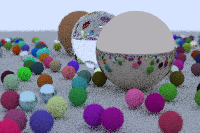

Eray Gulerler
I study computer science at Warsaw University of Technology and work on networks at Nokia. I joined as a summer trainee in July and stayed on as a working student in October 2026.
At work I set up virtual routers, change a configuration, and check where the packets go. The seven routers on this page are a toy version of that. Click a link to cut it.
Outside work I’ve been writing a C++ order book and testing fraud alerts on synthetic card transactions. Both are further down, and they run too.
- r1 to r7r1 r2 r4 r5 r7
- r7 to r3r7 r5 r4 r3
- r6 to r2r6 r4 r2
0 packets delivered, 0 lost
| to | next hop | cost |
|---|---|---|
| r2 | r2 | 10 |
| r3 | r3 | 10 |
| r4 | r2 | 20 |
| r5 | r2 | 30 |
| r6 | r2 | 30 |
| r7 | r2 | 40 |
My little ray tracer
The small picture in the corner is from my C# ray tracer. The floor is a sphere too. Its centre is 1,000 units below the other spheres, so the bit you can see looks flat.
The big picture is a smaller scene, traced in your browser as you read this. Drag it to turn the camera until you can see the coloured spheres reflected in the metal one. Then roughen its surface.

Original C# render, January 2026, 200 × 133 pixels
TickLadder
A C++ order book with a bounded price range. Each side has an array of quantities, and a bit records whether each price is occupied. A second bitmap records which rows still contain a price. When the best bid goes away, the engine can skip the empty rows.
The grid is a JavaScript port of that ladder with all 4,096 prices on screen. Cancel the best bid a few times and see how far the next one is. You can also click any cell to add or remove a price.
I wrote a map-based version to check the C++ against. On this page a plain scan from one end does that job after every update.
- Best bid
- none
- Best ask
- none
- Spread
- none
Should a fraud cutoff change every month?
I froze the model and changed only the cutoff. Updating it caught more fraud over six simulated months, but it also used more reviews. When I matched review counts month by month, both policies caught 301 cases.
You can see it in the daily counts. Plot them against reviews done and the two lines land on top of each other.
The full note Four-page report (PDF) Earlier classifier study
Monthly updating caught 330 frauds in 362 reviews. The fixed cutoff caught 302 in 331.
Software
ClaimFence
An expense API and 55 HTTP tests. One test asks whether an employee can approve their own claim. Others try to read claims belonging to a different tenant.
The grid is the policy table from the repository. Every cell is a request and the status it should get. I also break the policy on purpose to check the tests notice.
55 of 55 checks pass on the reference policy.
CanaryLedger
A release check for a checkout service. It uses the canary’s error and latency budgets to decide whether a rollout should continue.
In the regression example the candidate fails 125 of 97,000 requests across the site. That’s 0.13%, well inside a 1% budget. Checkout on its own tells a different story.
BTC Execution Lab
A simulator that splits a BTC order across time. It compares evenly spaced trades with a schedule based on historical volume.
This is one hour from the test month, 08:00 UTC on 8 June 2024. A fill can’t take more than 5% of what the market traded that minute, so a big order falls behind whichever schedule it follows.
Parcel invoice audit
A reconciliation job for carrier bills. It resolves revised invoices before checking the charges against the tariff.
The sample month has 1,371 invoice events for 1,200 parcels. Here are three of them, followed through the job.